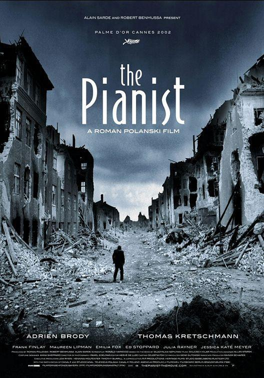
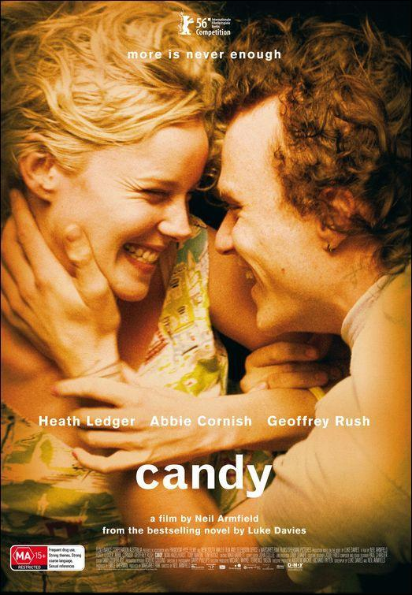
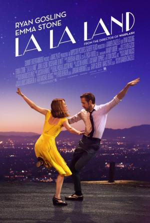

1. "El pianista"

"The Pianist" es una película dirigida por Roman Polanski, estrenada en 2002...
2. "Candy"

"Candy" es una película australiana estrenada en 2006...
3. "La vida de un Matrimonio 3"

La película "La Vida de un Matrimonio" es una exploración profunda...
4. "La La Land 4"

"La La Land" es una película musical estadounidense dirigida por Damien Chazelle...